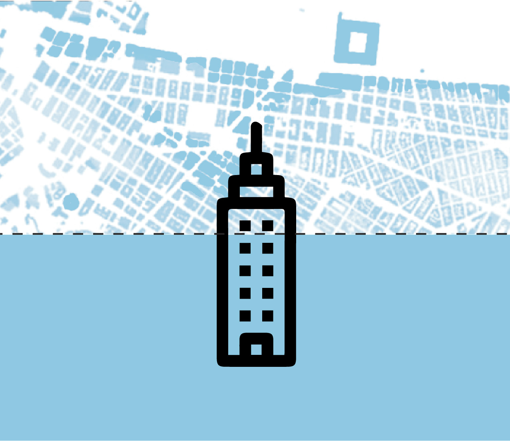
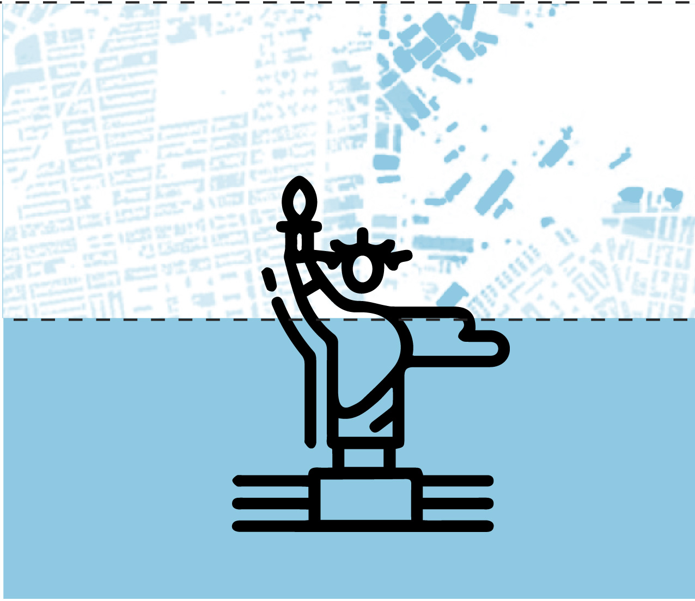
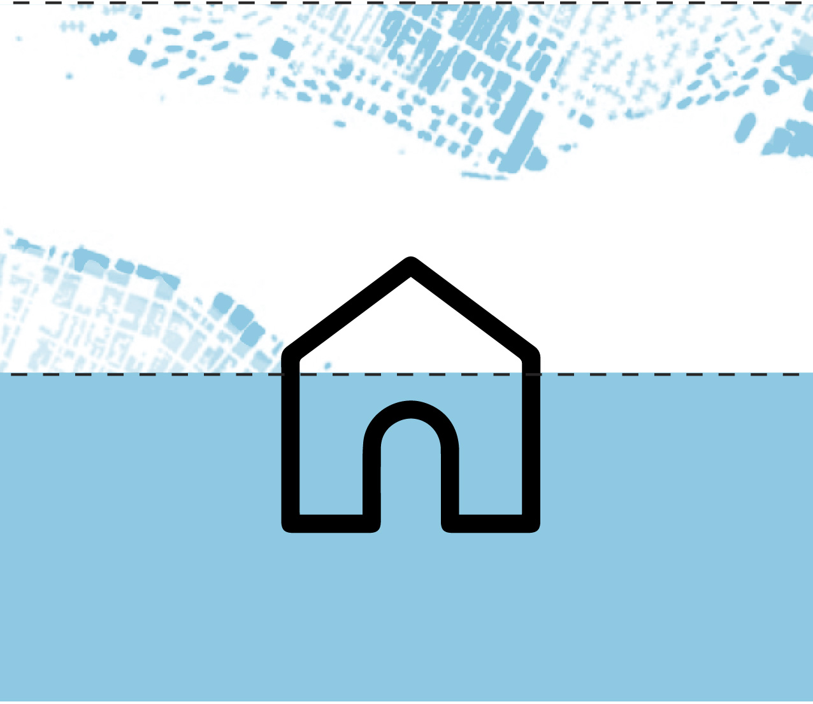
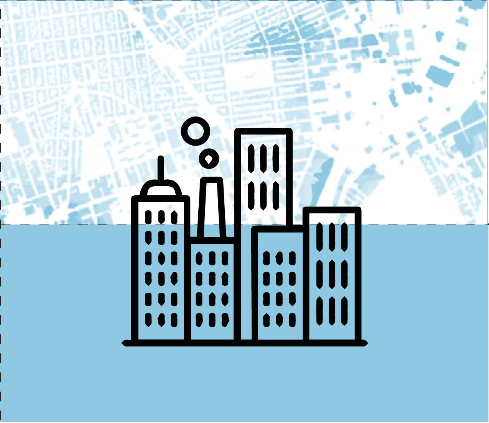

Empire State Building

As a leading global city, New York has the chance to help address global warming by promoting efficient energy use and lowering greenhouse gas emissions. Setting an example for what other cities can do to tackle changes in the world’s temperature. “New York City is the heart of the developed world. If it does things right, it can radiate inspiration to other places” Henk Ovink, the special envoy for international water affairs for the Netherlands.
Statue of Liberty

Many famous sites around the world will also be impacted by global warming in the future, including the Statue of Liberty which is at risk of being toppled down and the surrounding Liberty island submerged in water, by rising sea levels and intense storms.
Houses

The amount of real estate at risk in New York is mind-boggling: 71,500 buildings worth more than $100 billion stand in high-risk flood zones today with Lower Manhattan, Chelsea, The Financial District and parts of Brooklyn susceptible to frequent dangerous, high-risk floods with each foot of sea-level rise.
Buildings

As the earth’s temperature continues to rise due to global warming, New York City will face more climate related issues such as warmer temperatures, heavier storms, and higher sea levels.
Central Park

As the earth’s temperature continues to rise due to global warming, New York City will face more climate related issues such as warmer temperatures, heavier storms, and higher sea levels.
Why is it valuable and different from anything else?
Its valuable because it passes across a news story and raises general awareness for such an important topic but in a clean well-designed manner. It is an animation infographic that focuses more on clean aesthetics and graphs and less on heavy illustrations
What is the end to end experience
We want viewers to be immediately be able to understand the possible threats of Global warming, especially on the surrounding water bodies around us. By the end of going through the poster, they will be informed on the problem New York City faces as a whole,and how native New Yorkers will be affected if they dont make changes to their lifestyle.
What does the experience feel like?
They user is meant to go away feeling informed, but not like they were just overloaded with a bunch of information. The video wil be short, clean and straight to the point.
What was your process of putting it together?
It was interesting experience putting it together, firstly communicating via postcard then eventually through email. We were deliberate on the way we want the animation to be portrayed so users can quickly grasp what is being presented, but in an interesting straight forward way.
The New School & Rhode Island School of Design
Spring 2017, Instructor Dylan Greif